Pool list and pool detail: destination from the platform registry (#159)
GitLab and unknown-scope pools: up to 2.377% of the screen differs (the destination area, plus the side effects listed below)
GitLab and unknown-scope pools: up to 1.334% of the screen differs (the destination area, plus the side effects listed below)
GitLab and unknown-scope pools: up to 0.231% of the screen differs (the destination area, plus the side effects listed below)
What I see different
- GitHub and Bitbucket pools: nothing. At 360, 768 and 1280 wide, the pool list rows, the detail page's Destination group, the nine-repository list and its "Show 3 more" / "Show fewer" toggle are identical to the build before the change. Two of the 1280 captures differ by one shade on a 2 by 2 pixel rounded corner, which is rendering noise.
- Pool list, GitLab pools (1280): the destination column no longer shows the installation's GitHub avatar and "acme-labs". It shows the GitLab icon with "Acme / web" (one connection), "2 connections" (hover shows both names) or "GitLab" (no connections).
- Pool list, unknown scope (1280): an empty dashed square and a dash instead of the GitHub avatar and account name; the hover text reads "Unknown destination".
- Pool detail, GitLab pools (360, 768, 1280): Scope now reads "GitLab" (it read "Gitlab"). The Account row with the GitHub avatar and the "Runner group #1" row are gone. Each connection appears as a small two-line item: its name, then its address. With no connections the group says "No connections listed".
- Pool detail, unknown scope: a single row, "Scope: Unknown". The raw scope text is no longer echoed.
- Side effects of the above: where the Destination group gets taller or shorter, the Configuration group below it moves with it. Where it gets shorter (GitLab with one or no connection, unknown scope) the page no longer needs to scroll by 6 px, so the browser draws the text on the rest of the page with slightly different edge smoothing at 1280 wide; no element outside the Destination group moves or changes size (measured, element by element). In the detail captures taken with the group scrolled into view, the page also sits at a slightly different scroll position for the same reason.
- The pool list's destination column is still hidden below 1280 wide. That is an existing rule and is not changed here.
360 x 800
Drag the slider. Left of the line is the build after this change; right of the line is the build before it.
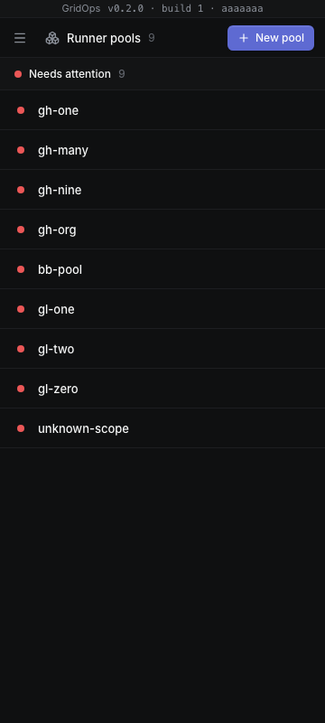

Pixel difference (red = changed)
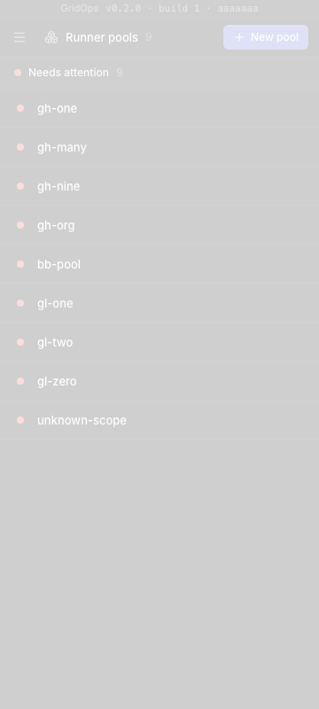
Side by side (before, then after)
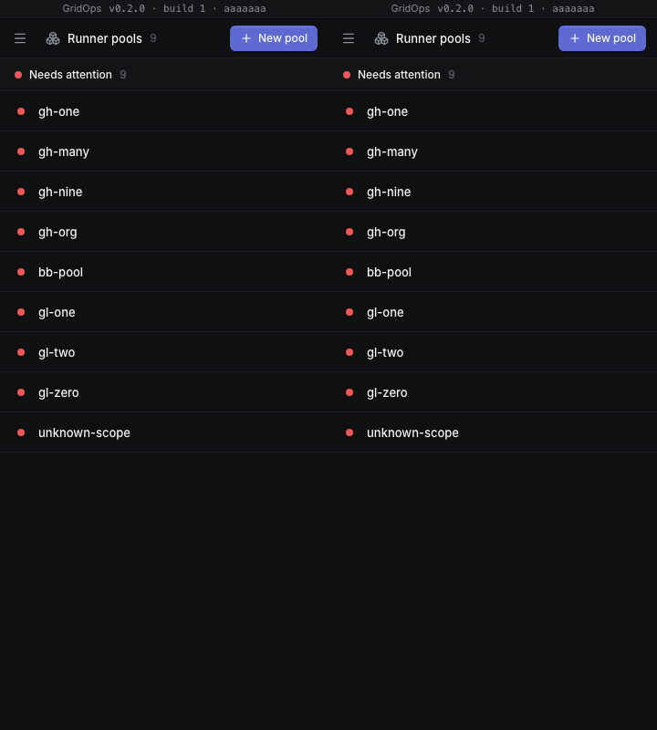
Numbers at 360 px
| Page state | Pixels different | Status |
|---|---|---|
| Pool list, all nine pools | 0 px (0.000%) | MATCH + DELTA (intended) |
| Pool detail (top of page): GitHub organization pool | 0 px (0.000%) | MATCH |
| Pool detail (top of page): GitLab pool, 2 connections | 0 px (0.000%) | DELTA (intended) |
| Destination group: GitHub repository pool, 3 repositories | 0 px (0.000%) | MATCH |
| Destination group: GitHub repository pool, 9 repositories (collapsed) | 0 px (0.000%) | MATCH |
| Destination group: GitHub repository pool, 9 repositories (expanded) | 0 px (0.000%) | MATCH |
| Destination group: GitHub organization pool | 0 px (0.000%) | MATCH |
| Destination group: Bitbucket (GitHub-scoped) pool | 0 px (0.000%) | MATCH |
| Destination group: GitLab pool, 1 connection | 6,847 px (2.377%) | DELTA (intended) |
| Destination group: GitLab pool, 2 connections | 6,513 px (2.261%) | DELTA (intended) |
| Destination group: GitLab pool, no connections | 6,650 px (2.309%) | DELTA (intended) |
| Destination group: unknown scope | 5,826 px (2.023%) | DELTA (intended) |
768 x 1024
Drag the slider. Left of the line is the build after this change; right of the line is the build before it.

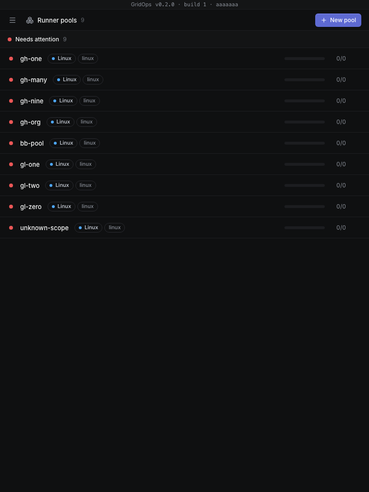
Pixel difference (red = changed)
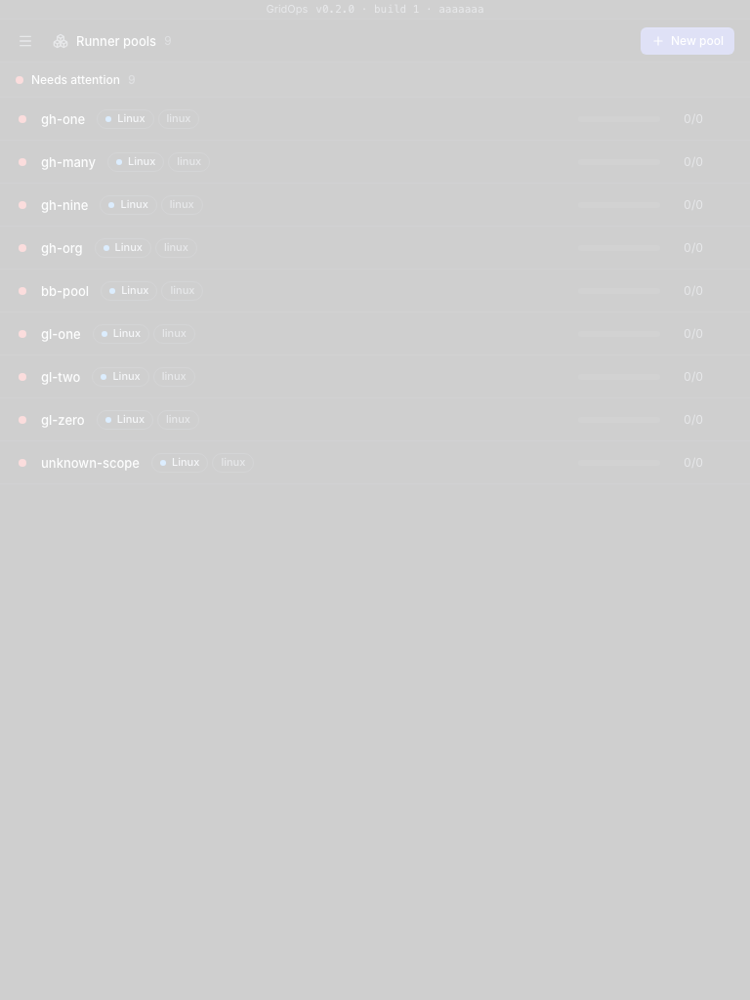
Side by side (before, then after)
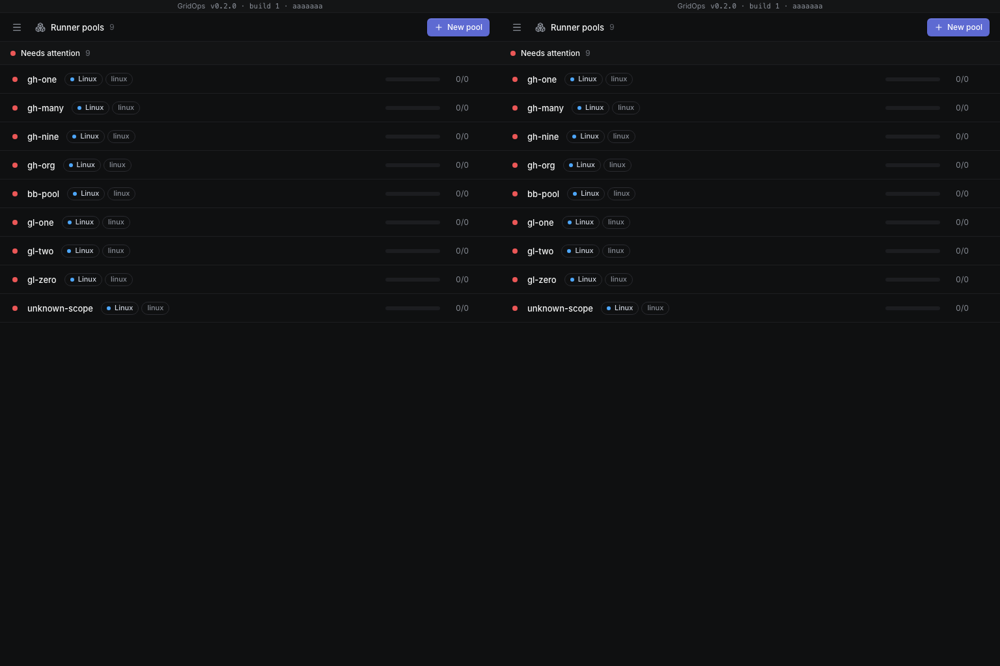
Numbers at 768 px
| Page state | Pixels different | Status |
|---|---|---|
| Pool list, all nine pools | 0 px (0.000%) | MATCH + DELTA (intended) |
| Pool detail (top of page): GitHub organization pool | 0 px (0.000%) | MATCH |
| Pool detail (top of page): GitLab pool, 2 connections | 2,330 px (0.296%) | DELTA (intended) |
| Destination group: GitHub repository pool, 3 repositories | 0 px (0.000%) | MATCH |
| Destination group: GitHub repository pool, 9 repositories (collapsed) | 0 px (0.000%) | MATCH |
| Destination group: GitHub repository pool, 9 repositories (expanded) | 0 px (0.000%) | MATCH |
| Destination group: GitHub organization pool | 0 px (0.000%) | MATCH |
| Destination group: Bitbucket (GitHub-scoped) pool | 0 px (0.000%) | MATCH |
| Destination group: GitLab pool, 1 connection | 10,243 px (1.302%) | DELTA (intended) |
| Destination group: GitLab pool, 2 connections | 10,488 px (1.334%) | DELTA (intended) |
| Destination group: GitLab pool, no connections | 9,866 px (1.255%) | DELTA (intended) |
| Destination group: unknown scope | 10,117 px (1.286%) | DELTA (intended) |
1280 x 800
Drag the slider. Left of the line is the build after this change; right of the line is the build before it.
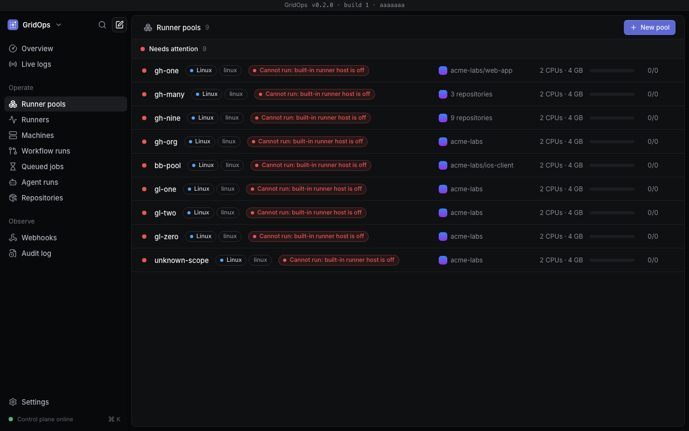
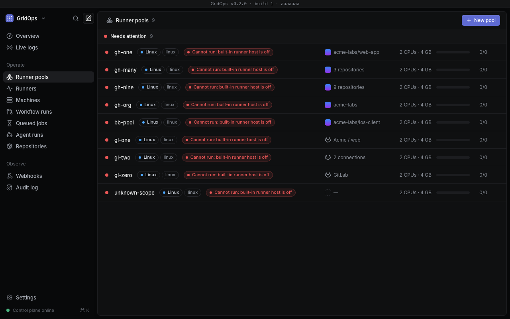
Pixel difference (red = changed)
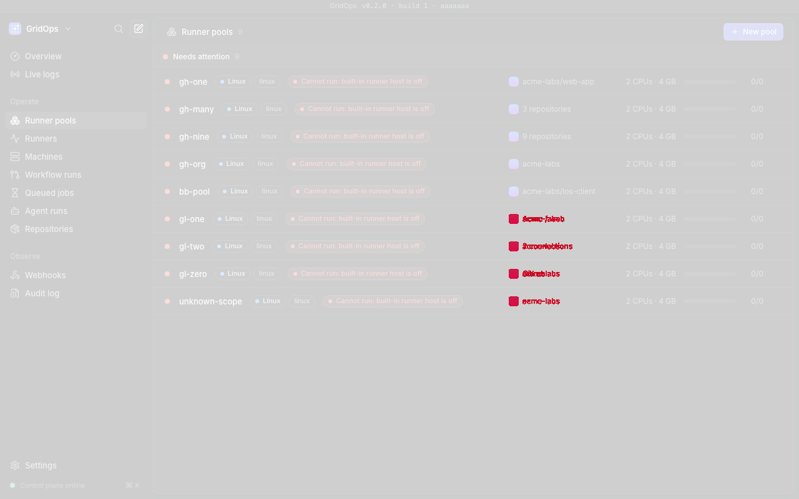
Side by side (before, then after)
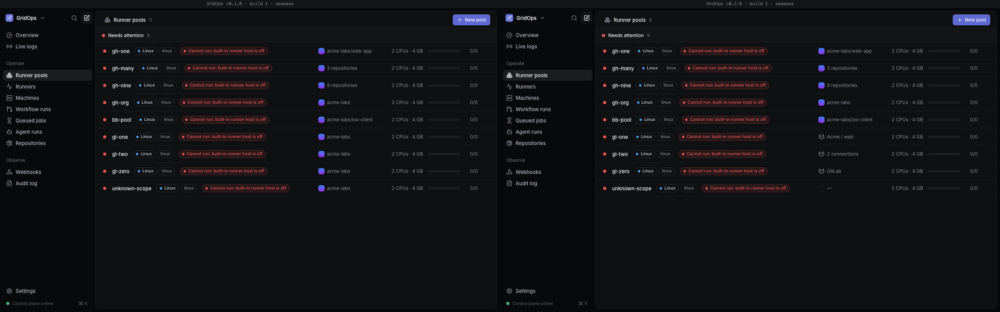
Numbers at 1280 px
| Page state | Pixels different | Status |
|---|---|---|
| Pool list, all nine pools | 769 px (0.075%) | MATCH + DELTA (intended) |
| Pool detail (top of page): GitHub organization pool | <1 px (0.000%) | MATCH |
| Pool detail (top of page): GitLab pool, 2 connections | 2,368 px (0.231%) | DELTA (intended) |
| Destination group: GitHub repository pool, 3 repositories | 0 px (0.000%) | MATCH |
| Destination group: GitHub repository pool, 9 repositories (collapsed) | 0 px (0.000%) | MATCH |
| Destination group: GitHub repository pool, 9 repositories (expanded) | 0 px (0.000%) | MATCH |
| Destination group: GitHub organization pool | 0 px (0.000%) | MATCH |
| Destination group: Bitbucket (GitHub-scoped) pool | <1 px (0.000%) | MATCH |
| Destination group: GitLab pool, 1 connection | 2,129 px (0.208%) | DELTA (intended) |
| Destination group: GitLab pool, 2 connections | 2,368 px (0.231%) | DELTA (intended) |
| Destination group: GitLab pool, no connections | 1,645 px (0.161%) | DELTA (intended) |
| Destination group: unknown scope | 1,862 px (0.182%) | DELTA (intended) |
Per-section delta table
| Section | Viewport | Status | Description | Crop of the difference image |
|---|---|---|---|---|
| Pool list: destination cells of the five GitHub and Bitbucket pools | 1280 | MATCH | No pixel differs from the build before the change: same avatar, same text, same spacing. | 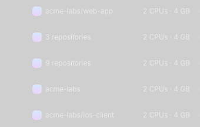 |
| Pool list: destination cells of the GitLab pools and the unknown-scope pool | 1280 | DELTA (intended) | Before: each showed the installation's GitHub avatar and "acme-labs". Now: the GitLab icon with "Acme / web", "2 connections" or "GitLab"; a dash with an empty square for the unknown scope. | 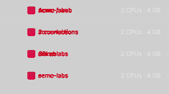 |
| Pool list at 360 and 768 | 360, 768 | MATCH | The destination column is hidden below 1280 by an existing rule that this change does not touch, so the page is identical. | - |
| Pool detail, Destination group: GitHub organization pool | 1280 | MATCH | Scope, Account with avatar and Runner group #id are unchanged. | 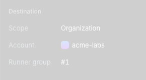 |
| Pool detail, Destination group: GitHub organization pool | 360 | MATCH | Same at mobile width. | 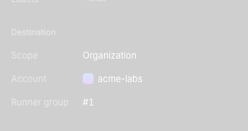 |
| Pool detail, Destination group: Bitbucket pool (GitHub-scoped) | 1280 | MATCH | Looks exactly like a GitHub organization pool, as before. | 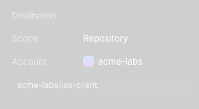 |
| Pool detail, Destination group: GitHub repository pool, 9 repositories, expanded | 1280 | MATCH | The list of nine, the "Show fewer" toggle and the spacing are unchanged. The collapsed state ("Show 3 more") also matches at all three widths. | 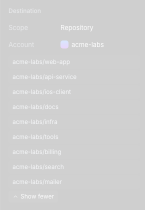 |
| Pool detail, Destination group: GitLab pool, 1 connection | 1280 | DELTA (intended) | Scope reads "GitLab" (was "Gitlab"); one two-line connection item; the Account row and Runner group row are gone. | 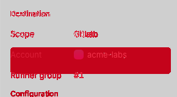 |
| Pool detail, Destination group: GitLab pool, 2 connections | 1280 | DELTA (intended) | Scope "GitLab" and two connection items in the server's order. The group is a little taller, so the Configuration group below it moves down. | 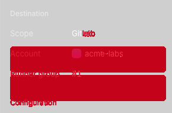 |
| Pool detail, Destination group: GitLab pool, 2 connections | 360 | DELTA (intended) | Same change on a phone; both items fit without clipping or sideways scrolling. | 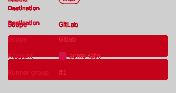 |
| Pool detail, Destination group: GitLab pool, no connections | 1280 | DELTA (intended) | Scope "GitLab" then a muted "No connections listed"; the installation's GitHub account no longer shows. | 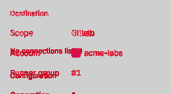 |
| Pool detail, Destination group: unknown scope | 1280 | DELTA (intended) | Only "Scope: Unknown"; the raw scope text, the GitHub account and the Runner group row are not shown. | 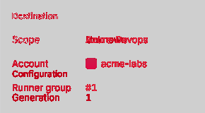 |
| Everything else on every page (sidebar, header, status, runtime, configuration) | 360, 768, 1280 | MATCH | Every element above the Destination group has the same position and size in both builds (measured). Only the group's own containers and the content below it change with its height, and some text edges look slightly different at 1280 for the shorter groups (GitLab one or no connection, unknown scope) because the page no longer scrolls. | - |


Sub-issue recommendations
None required: the verdict is PASS. One carried item for the operator (not part of this audit's verdict): the runner rows and the dashboard pool row still show a GitLab pool under the installation's GitHub login or as "Gitlab". They are outside #159's scope and this change leaves them as they were; a follow-up in epic #136 should take them through the same registry (runner-row.tsx lines 46, 109, 127 and routes/_app/index.tsx line 279).
Method
- Both builds are
vite buildoutputs of committed trees (git archive): before =e022a5d(identical source to master tip), after = the branch head. Both served by the same API binary against identically seeded throwaway databases, with the build number and commit pinned so the version bar matches. - Captured with headless Playwright Chromium at 360x800, 768x1024 and 1280x800; clock fixed; GitHub avatar requests answered with one fixed image so avatars are comparable. The app scrolls inside its own container, so detail pages were captured with the Destination group scrolled into view.
- Differences counted with ImageMagick
compare -metric AE, diff images from the same command, composites with+append. The reference for GitHub and Bitbucket is the build before the change; for the new GitLab and unknown-scope states the wireframe (wireframe.html, low fidelity) cannot be a pixel reference, so copy and layout were checked against it by eye. The pixel diff against the before build shows the destination area changing, and an element-by-element geometry comparison shows nothing above the Destination group changing position or size.